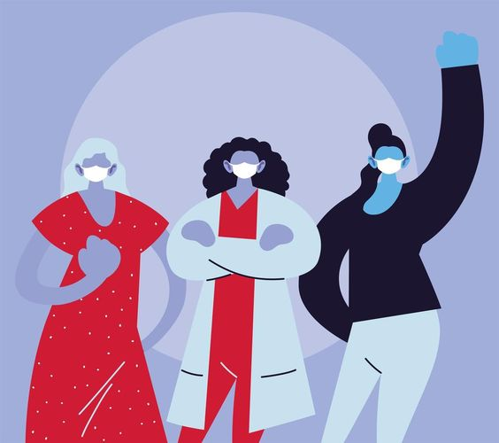

Nous accompagnons votre santé à domicile, plus qu’un métier, un engagement au quotidien.
Nos valeurs
L’humain est au coeur de notre métier, et chaque patient est unique.
Le professionnalisme et notre dynamisme portent notre sens du service.
La confiance, elle nous lie à nos patients et à leur entourage.
À propos de nous
Nous sommes deux infirmières diplomées d'état, IDEL, conventionnées avec la Caisse Nationale d'Assurance Maladie et inscrites à l'ordre infrimiers. Titiana Hugon et Sabine Lievre Bellenger qui travaillons 7j/7 que ce soit pour des soins à domicile ou au cabinet et sur RDV. Nous effectuons tous types de soins. Au cours de nos nombreuses années d'expertisent, nous avons aquis les compétences et l'expertise nécessaires pour assurer une prise en charge polyvalente, dans le strict respect des règles d'hygiène et des protocoles de soins. Nous prettons une écoute attentive à nos patients, nous effectuons les soins avec délicatesse et bienveillance.